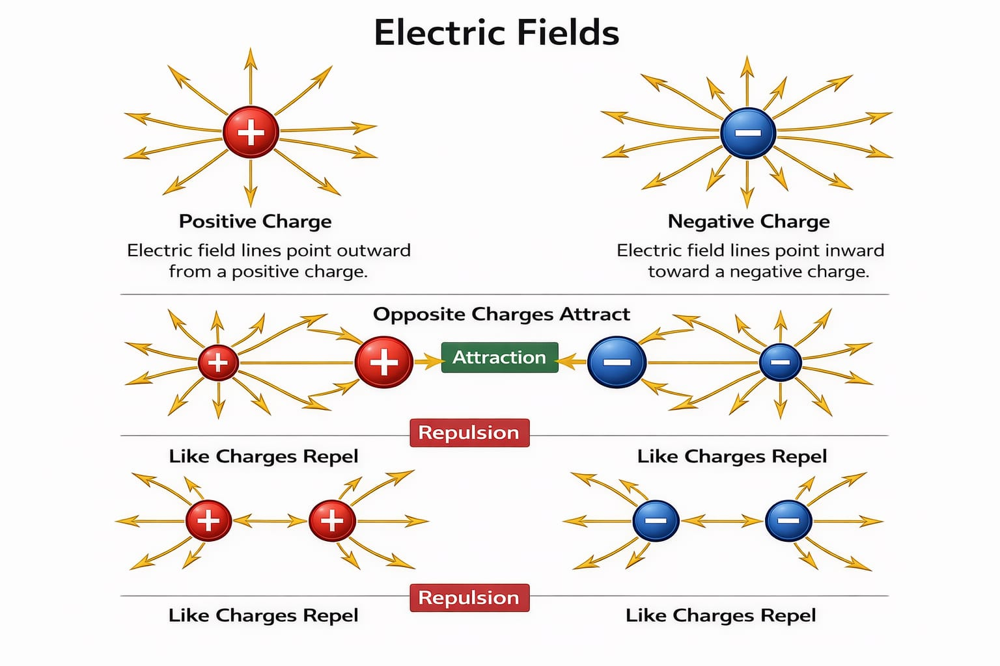
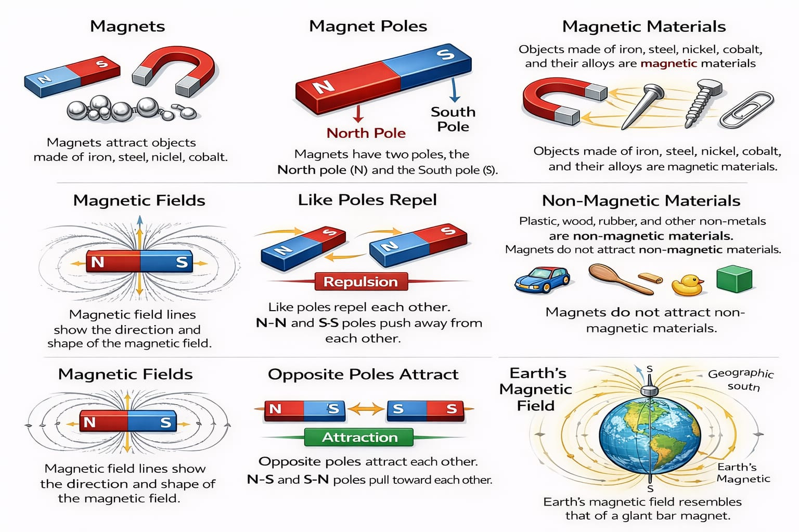

DEFINITION: Objects that attract other objects if they are made of magnetic materials (Iron, steel, nickel, cobalt)

POLES: - There are North and South Poles
- Reperesent the strongest parts of the magnets
- Like poles repel if placed near each other
- Opposite poles attract if placed near each other
MATERIALS: - Magnetically hard materials: Retains magnetism for a long time after magnetization (for permanent magnets)
- Magnetically soft materials: Loses magnetism easily after magnetization (used for temporary magnets)
MAGNETIC FIELDS: The invisible volume of space around a magnet

- Magnetism is able to be detected
- Is invisible, but visualized using iron fillings
OVERLAPPING MAGNETIC FIELDS: If two magnets are placed near each other, their magnetic fields will overlap and interact with one another, altering the shape
TYPES:
- Uniform = Strength and Direction are the same, allowing many useful features
- Empty space between overlapping magnetic field lines is called blank space
INDUCED MAGNETISM: Taking a magnetic material and turn it into a magnet by the process of magnetic induction. If we take a magnetically soft material, like iron nails, and attach it to a magnet, then the iron nails will become magnets themselves. However, when removed from the magnet, it will lose its magnetism because iron is a magnetically soft material.
ELECTROMAGNETISM: Electromagnets are magnetic materials that have been magnetized with electricity.
HOW IT WORKS:
- Wrapping a coil with a flowing current around a magnetic material creates a magnetic field
- The strength of the field can be increased by =
ㅤ1. Increasing Current
ㅤ2. Increasing turns
ㅤ3. Wrapping it around a magnetically soft core (higher magnetic permeability)
RIGHT-HAND GRIP RULE: To find the direction of the magnetic field created by a current in a wire,we use the right hand rule
HOW IT WORKS - The thumb follows the current's direction in the wire (Always points to the north pole of the magnet)
- The curled fingers act as the direction of the magnetic field around the current
- Ex:
ㅤ1. If the current is entering the screen, our thumbs face the screen
ㅤ2. If our hand curls upwards, the magnetic field is moving clockwise.